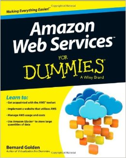
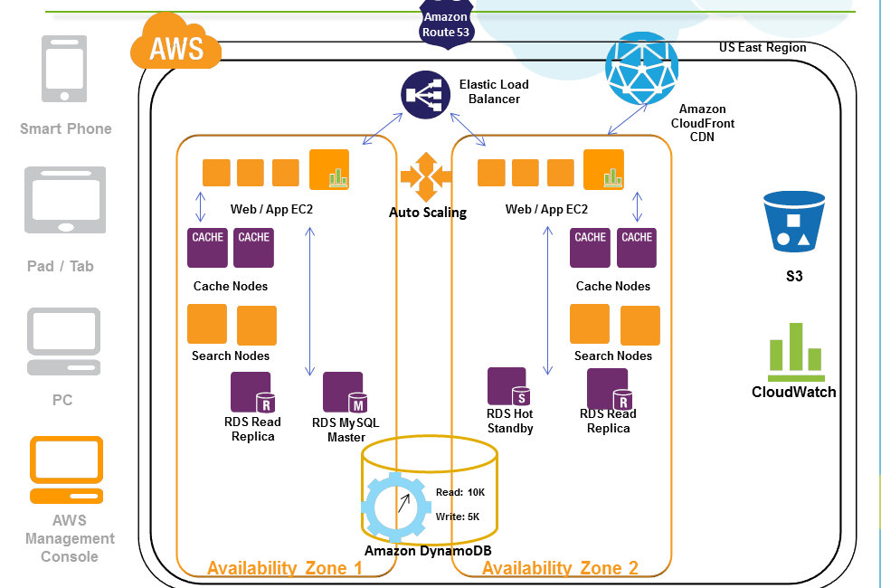

AWS For Dummies
:B

Esta presentación es posible gracias al generoso auspicio de:
Crafting Products wih Joy
Cloud Computing
Paradigma que permite ofrecer servicios de computación a través de internet
Cloud Computing
Características
- Eficiencia en el uso de los recursos
- Economías de escala
- Escalabilidad y Elasticidad
IaaS / PaaS
IasS |
PaaS |
| Infrastructura as a Service | Plataform as a Service |
| Ej: Amazon EC2, Windows Azure, Google Compute Engine, Rackspace | Ej: AWS ElasticBeanstalk, Heroku, Google App Engine, Windows Azure |
AWS
Amazon Web Services
Datos Generales
- Lanzamiento Oficial 2006
- Conjunto de servicios interconectados
- Acceso a los servicios a través de HTTP (REST y/o SOAP)
- Pagas por lo que usas
Tipos de Servicios
- Compute
- Storage & Content Delivery
- Database
- Networking
- Application Services
- Administration & Security
- Deployment & Management
- Analytics
- Mobile Services
- Enterprise Applications
Servicios más comunes
- EC2: Elastic Cloud Computing
- Route53
- ELB: Elastic Load Balancer
- RDS: Relational Database Service
- ElasticCache
- SES: Simple Email Service
- DynamoDB
Servicios Interesantes
- Lambda
- EC2 Container Service
- Mechanical Turk
- Machine Learning
- CloudSearch
¿Cómo "%·#$$!! hago funcionar todo esto?
Conceptos
- Región: Distribuidas a través del mundo
- Zone: Distribuida dentro de una zona
- AMI: Amazon Machine Images
- EBS: Elastic Block Store
- EIP: Elastic IP
Uniendo los cabos: Tipica infraestructura
¿Dónde alojo mi página web?
EC2
- Arriendo de servidores virtuales
- Muchos sabores a escoger: Linux (en todos los colores), Windows (¿vale la pena algún color?)
... Y mis Bases de Datos?
RDS to the rescue!
- The Classics: MySQL, Postgres, Oracle, SQL Server
- Amazon Aurora: Cluster de MySQL *.*
- Principalmente gestionado por ellos
- Multi A-Z
Soy súper famoso, y un solo servidor para mi aplicación no se la puede...
¿que hago?
EC2 + ELB
Levanta N instancias de tu server de página web y colócalas detrás de un Balanceador
Genial! pero ahora mis seguidores cuando inician sesión, de la nada se desloguean
Esto no es tan lindo como pensaba
ElasticCache
- Podrías guardar las sesiones en tu DB Relacional...
- Pero... en alta demanda, mucha query
- Mejor usemos un repositorio de datos rápido
- Redis o Memcached
Igual tener N servidores durante TOOOOODO el día me sale carito
¿Como procedo?
AutoScaling + CloudWatch
- Registra alertas en base a tus servidores
- Si se sobrepasa cierto umbral...
- ... AutoScaling reaccionará
OSOM!
Pero si los servers se están apagando y prendiendo solos...
Las fotos que me envían mis fans ¿Las perdería? ¿Donde las dejo?
S3 + CloudFront
Eres seco Pablo!
:$
Necesito enviar algunos emails también...
AWS me ayuda?
Configura tu cuenta de SES y elige como quieres enviar los mails
Si utilizando un server SMTP o directamente con la API
Gracias Pablo! Ahora soy un mejor Programador
AHORA SOY...
FULL STACK!
( P A U S A )
Servicios Interesantes
- Lambda
- EC2 Container Service
- Mechanical Turk
- Machine Learning
- CloudSearch
(por) FIN!
Crafting Products wih Joy